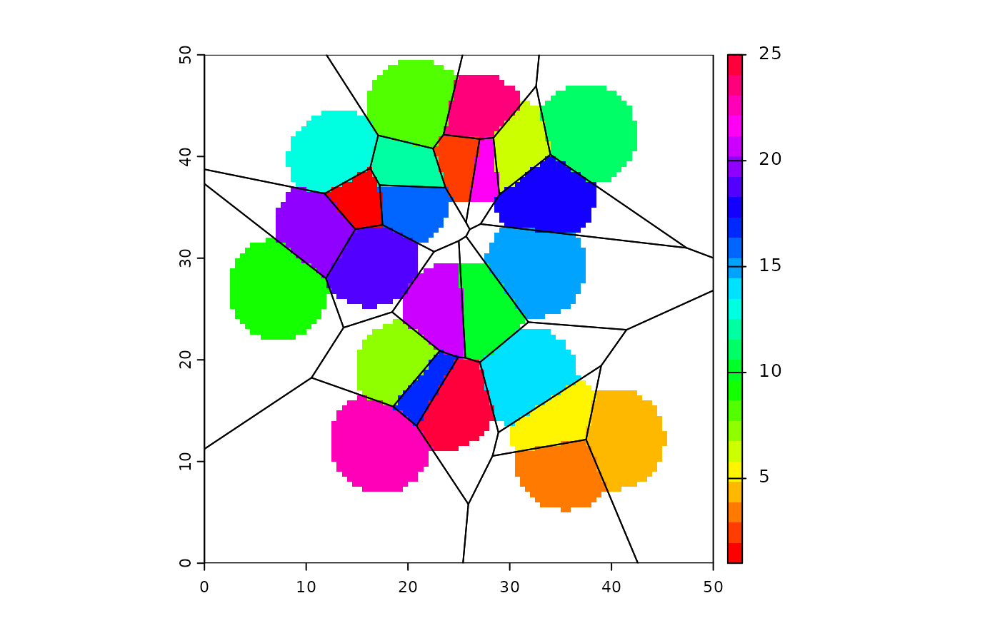

interpNear.RdNearest neighbor interpolation of points, using a moving window
# S4 method for SpatRaster,SpatVector
interpNear(x, y, field, radius, interpolate=FALSE, fill=NA, filename="", ...)
# S4 method for SpatRaster,matrix
interpNear(x, y, radius, interpolate=FALSE, fill=NA, filename="", ...)SpatRaster
SpatVector or matrix with three columns (x,y,z)
character. field name in SpatVector y
numeric. The radius of the circle (single number). If interpolate=FALSE it is also possible to use two or three numbers. Two numbers are interpreted as the radii of an ellipse (x and y-axis). A third number should indicated the desired, counter clockwise, rotation of the ellipse (in degrees)
logical. Should the nearest neighbor values be linearly interpolated between points?
numeric. value to use to fill empty cells
character. Output filename
additional arguments for writing files as in writeRaster
SpatRaster
r <- rast(ncol=100, nrow=100, crs="local", xmin=0, xmax=50, ymin=0, ymax=50)
set.seed(100)
x <- runif(25, 5, 45)
y <- runif(25, 5, 45)
z <- sample(25)
xyz <- cbind(x,y,z)
x <- interpNear(r, xyz, radius=5)
p <- vect(data.frame(xyz), geom=c("x", "y"))
v <- voronoi(p)
plot(x, col=rainbow(25))
lines(v)

# plot(v, col=rainbow(25)); points(p)